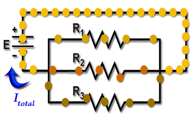
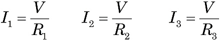
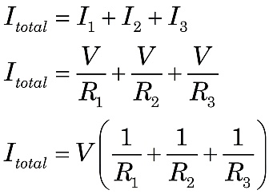

|
 Figure 1.Current through three resistors in parallel. |
When resistors are connected in parallel, the voltage difference V across each resistor is the same. This is clear because all the leads on the left end of the resistors are connected to the same point, and similarly on the right end. However, Ohm’s Law tells us that the current I through each resistor will depend on its R-value.

The current through each resistor will merge at the connection point, as shown in Figure 1, yielding the total current, Itotal. Using the rated R values, you can calculate the current for each resistor and find the total current the battery will provide to the parallel circuit.

Does this look a little familiar? It should! This is the relationship used to calculate the total parallel resistance!